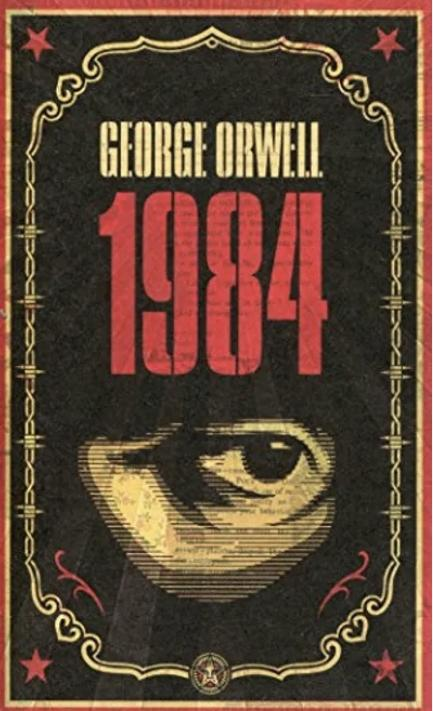
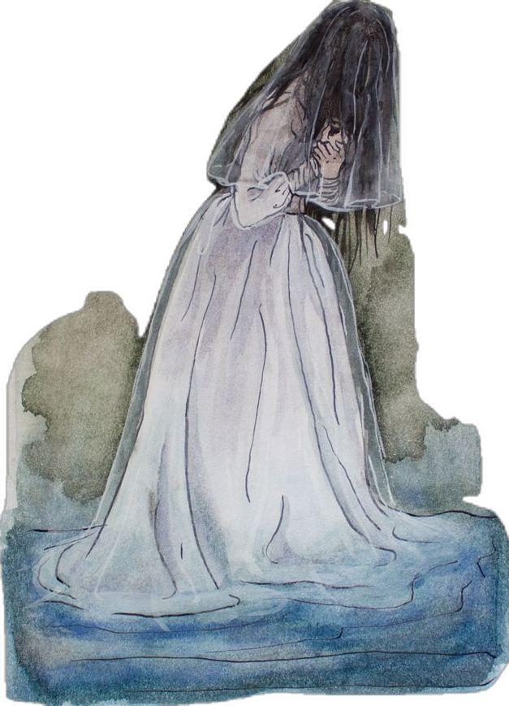
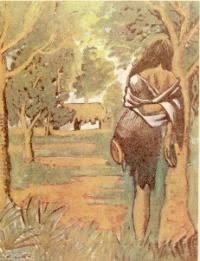
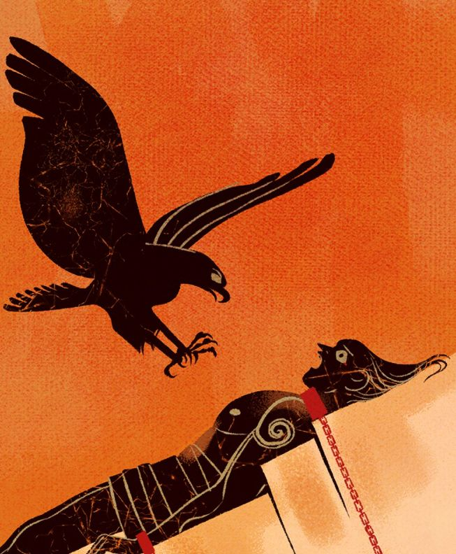
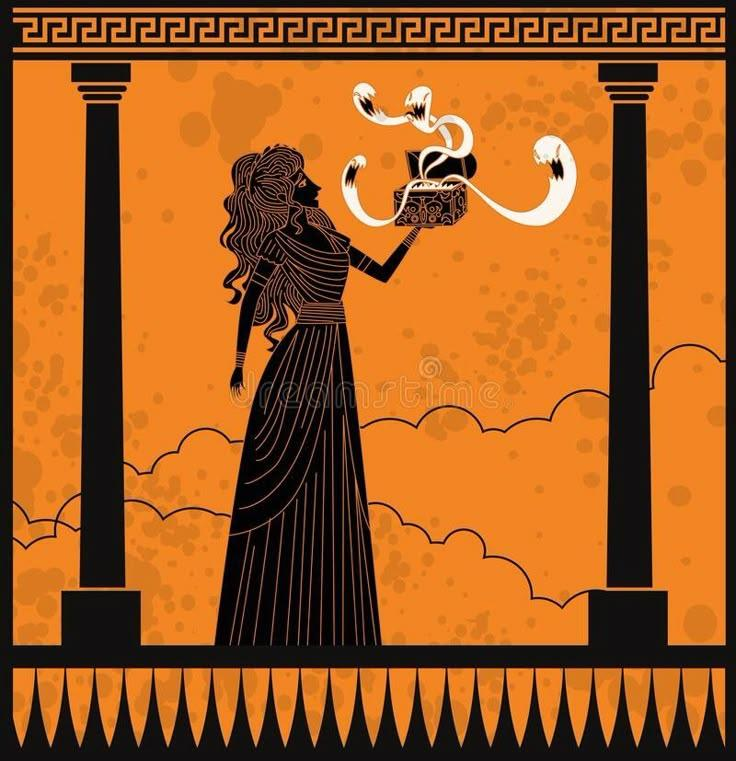
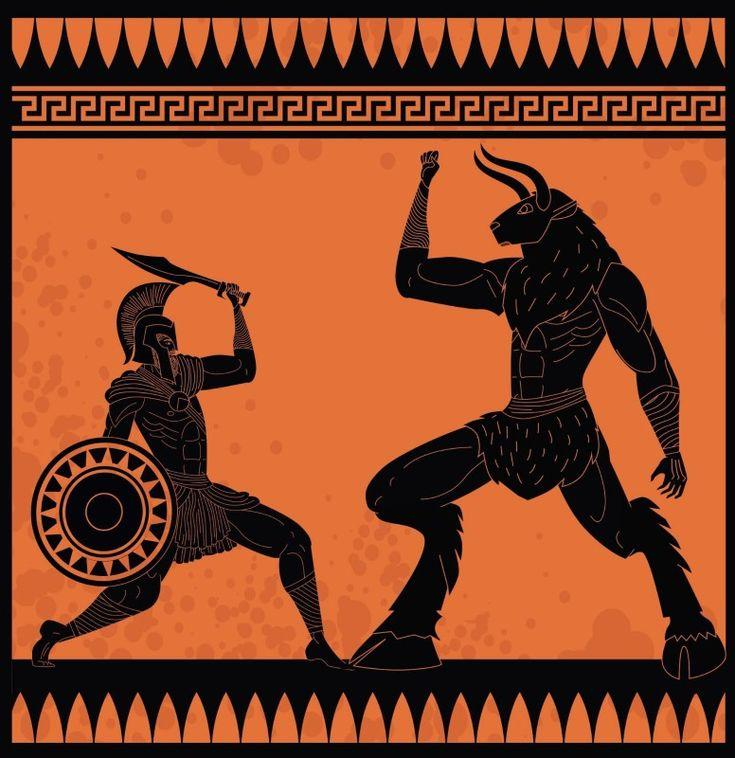
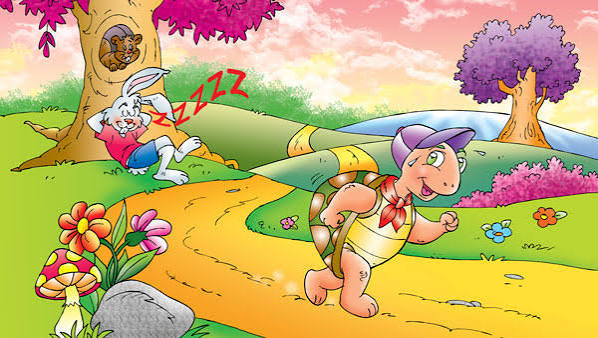
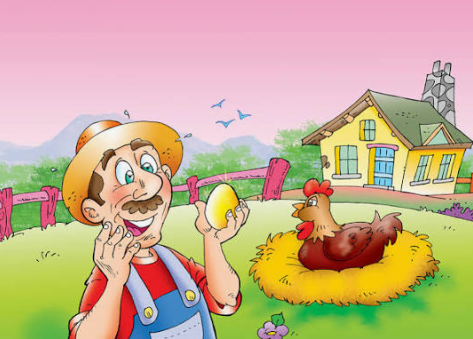

Reconocer distintas formas de narrar
El documento presenta ejemplos de textos narrativos y describe sus características principales. Las siguientes secciones conservan esas categorías, ejemplos y fragmentos.
¿Qué es un texto narrativo?
Es un texto que relata una sucesión de hechos. En el material se presentan formas narrativas de diferente extensión y propósito, con acontecimientos reales o ficticios.
Formas del texto narrativo
1. Novela

Definición del documento: narración extensa sobre hechos de naturaleza ficticia, en cuya trama participan una serie de personajes, en un espacio y momento determinados.
Ejemplos del documento: Orgullo y prejuicio (Jane Austen), Crimen y castigo (Fiódor Dostoievski), Moby-Dick (Herman Melville), Cien años de soledad (Gabriel García Márquez) y 1984 (George Orwell).
Fragmento de Cien años de soledad
Fragmento literario · Gabriel García Márquez«Muchos años después, frente al pelotón de fusilamiento, el coronel Aureliano Buendía había de recordar aquella tarde remota en que su padre lo llevó a conocer el hielo».
2. Cuento literario
Definición del documento: narración corta de temática diversa que relata una serie de hechos, que pueden ser reales o ficticios. Tiene inicio, nudo y desenlace.
Ejemplos: El corazón delator, de Edgar Allan Poe, y A la deriva, de Horacio Quiroga.
Fragmento incluido en el documento
Fragmento narrativo · atribución específica no indicada en el documento«Al recibidor de maderas de mister Dougald, Lorenzo Cubilla, lo había conocido en Puerto Esperanza un viernes santo... ¿Viernes? Sí, o jueves... El hombre estiró lentamente los dedos de la mano. —Un jueves... Y cesó de respirar».
El documento presenta este fragmento después de los títulos de cuento, pero no identifica explícitamente a cuál de ellos pertenece; por eso no se atribuye a una obra concreta.
3. Relato
Definición del documento: género narrativo que, por su extensión, se halla entre el cuento y la novela.
4. Leyenda


Definición del documento: relato que, a través de la fantasía y el folclore local, ensalza hechos que sucedieron en un lugar y un momento concretos.
Ejemplos: La Llorona y La Patasola.
5. Mito



Definición del documento: historias protagonizadas por seres sobrenaturales, como dioses o héroes, que servían como explicación a determinados fenómenos o acontecimientos.
Ejemplos: Prometeo y el fuego, Pandora y Teseo y el minotauro.
6. Fábula


Definición del documento: narración de hechos protagonizada por animales que proporciona al lector lecciones morales.
Ejemplos: La liebre y la tortuga y La gallina de los huevos de oro.
7. Epopeya
Definición del documento: escritos, generalmente en verso, que recogen las hazañas de un pueblo.
Ejemplos: La Epopeya de Gilgamesh, La Ilíada, La Odisea, La Eneida y La Divina Comedia.
Fragmento de La Ilíada
Fragmento épico · atribuido a Homero en la tradición literaria«Canta, oh diosa, la cólera del Pelida Aquiles; cólera funesta que causó infinitos males á los aqueos y precipitó al Orco muchas almas valerosas de héroes, á quienes hizo presa de perros y pasto de aves —cumplíase la voluntad de Júpiter— desde que se separaron disputando el Atrida, rey de hombres, y el divino Aquiles».
8. Diario
Definición del documento: escrito que plasma las experiencias vividas por el autor en el intervalo de un día.
Ejemplo: El diario de Ana Frank.
Fragmento de El diario de Ana Frank
Fragmento de diario · Ana Frank«Espero poder confiártelo todo como aún no lo he podido hacer con nadie, y espero que seas para mí un gran apoyo».
9. Crónica
Definición del documento: recoge una línea temporal de acontecimientos; es decir, narra de forma cronológica una sucesión de hechos.
Ejemplos: Crónica de una muerte anunciada, de Gabriel García Márquez, y Crónicas marcianas, de Ray Bradbury.
Fragmento de Crónica de una muerte anunciada
Fragmento narrativo · Gabriel García Márquez«El día en que lo iban a matar, Santiago Nasar se levantó a las 5.30 de la mañana para esperar el buque en que llegaba el obispo».
Bibliografía
Vicente, E. A. (2024, 21 de agosto). 14 ejemplos de textos narrativos. Enciclopedia Significados.
https://www.significados.com/ejemplos-de-textos-narrativos/
Las definiciones, los títulos de los ejemplos y los fragmentos de esta página se basan en el documento «Ejemplos de Textos Narrativos» proporcionado por la usuaria.